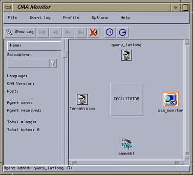

The figure on the right shows a monitor program (which is actually an agent itself). This monitor shows the facilitator that it is connected to, along with the set of all agents that are connected to that agent (4 in this instance). All of these agents can be running on different, heterogenous platforms and communicate with the facilitator using TCP/IP over a network. One powerful feature of the OAA is that agents can connect and disconnect from the OAA at will - the facilitator is constantly aware of all available agents and if one agent disconnects then this service is simply not available at that time.The TerraVision terrain visualization system has been instrumented to become an OAA agent. It can connect to a facilitator and advertise various capabilities for controlling itself. This means that any agent could request that TerraVision perform some function, such as fly to a particular location. This query is sent to the facilitator which checks to see if there is a TerraVision agent that can handle the request. If this is the case, then the request is sent to TerraVision and it will perform the operation.
For further information on the OAA, please refer to the OAA Home Page.
All TerraVision solvables take the form, terrain3d(<func>, <options>). That is, TerraVision only advertises one solvable: terrain3d. The first parameter is used to give the name of a function and all of its parameters for TerraVision to perform, for example, message("Hello World"). The second parameter is used to pass any option parameters for that function - this will often be empty.
This approach of using a single advertised solvable (rather than advertising a separate solvable for each function) was chosen to better align with existing OAA methodologies. TerraVision is providing a capability to control 3-D terrain and so this is the solvable that it exports. It is feasible that another terrain visualization program could be instrumented as an OAA agent and support the terrain3d solvable also. This capability is not TerraVision specific.
flyto : fly to a geocentric location getview : return the current geocentric location getview_gdc : return the current geodetic location loadmodel : load a new VRML/GeoVRML model over the terrain loadterrain : load a new terrain imagery/elevation dataset message : display a message dialog in TerraVision move : move relative to the current orientation pathload : load a flight path file pathreset : unloads the current flight path from memory pathplay : play the currently loaded flight path pathstop : stop any currently playing flight path pathpause : pause the playback of the current flight path refresh : refresh the display resetview : return to the initial viewpoint rotate : rotate the view relative to the current orientation set : change a TerraVision setting or behavior setview : set the current geocentric location setview_gdc : set the current geodetic location stopmotion : set current velocity to zero translate : move relative to current position in geocentric coordinates unloadmodel : unload an existing VRML/GeoVRML model unloadterrain : unload an existing terrain imagery/elevation dataset
Function : getview( X, Y, Z, Yaw, Pitch, Roll )
Optional Parameters : none
Description : This function will return the current viewpoint position and orientation for the 3-D viewer. Upon successful completion, the (X, Y, Z) tuple will be instantiated with the geocentric coordinate of the current viewpoint, while the (Yaw, Pitch, Roll) tuple will be instantiated with the yaw, pitch, and roll orientation values in units of radians.
Example : terrain3d( getview( X, Y, Z, Yaw, Pitch, Roll ), [] )
See Also :
getview_gdc,
setview
Function : flyto( X, Y, Z, Yaw, Pitch, Roll )
Optional Parameters : none
Description : The flyto function instructs TerraVision to fly to a specific geocentric coordinate and orientation. A geocentric coordinate is a point in 3-space that represents an (x, y, z) offset from the center of the planet in units of meters. Orientation is specified in terms of a (yaw, pitch, roll) tuple in units of radians.
Example : terrain3d( flyto( 345961.1, -125476.3, 20450715.2, 0, -1.57, 0), [] )
See Also :
setview,
setview_gdc
Function : getview( X, Y, Z, Yaw, Pitch, Roll )
Optional Parameters : none
Description : This function will return the current viewpoint position and orientation for the 3-D viewer. Upon successful completion, the (X, Y, Z) tuple will be instantiated with the geocentric coordinate of the current viewpoint, while the (Yaw, Pitch, Roll) tuple will be instantiated with the yaw, pitch, and roll orientation values in units of radians.
Example : terrain3d( getview( X, Y, Z, Yaw, Pitch, Roll ), [] )
See Also :
getview_gdc,
setview
Function : getview_gdc( Lat, Long, Elev )
Optional Parameters : none
Description : The getview_gdc function will return the current viewpoint location in geodetic (lat/long) coordinates. Upon successful completion, the (Lat, Long) pair will be instantiated with the latitude and longitude location in units of degrees, while the Elev value will be instantiated with the elevation of the viewpoint above the ellipsoid in units of meters.
Example : terrain3d( getview_gdc( Lat, Long, Elev ), [] )
See Also :
getview_gdc,
setview
Function : loadmodel( Url )
Optional Parameters : none
Description : This function will load and display a new VRML or GeoVRML model. The Url parameter points to the .wrl file to be loaded. This can be an http URL or a localhost pathname.
Example : terrain3d( loadmodel( "http://www.tvgeo.com/TileSets/Pyramids/benning.mout.model/model.wrl" ), [] )
See Also :
unloadmodel,
loadterrain
Function : loadterrain( Imagery, Elevation )
Optional Parameters : none
Description : This function will load and display a new terrain model. The Imagery and Elevation parameters are URLs to the TerraVision orthorectified image (OI) and elevation (DEM) datasets, and the Geoname parameter is the GeoSet name for the terrain, which should be the same as the string in the geo-name field of the imagery dataset's tiles.tspec file.
Example : terrain3d( loadterrain( "http://www.tvgeo.com/TileSets/Pyramids/sfbay.oi", "http://www.tvgeo.com/TileSets/Pyramids/sfbay.dem" ), [] )
See Also :
unloadterrain
loadmodel
Function : message( Text )
Optional Parameters : none
Description : This function will display a textual message inside a dialog window. This dialog window is a child of the 3-D viewer, i.e. it is iconified when the 3-D viewer is iconified, etc. You can include escape sequences such as \n in the message string to format your text.
Example : terrain3d( message( "Hello TerraVision\nHow Are You?" ), [] )
Function : move( Forward, Right, Up)
Optional Parameters : [noanim]
Description : Moves the current viewpoint in a viewer-based direction. This means moving forward/backward along the path that the viewer is facing, sliding left/right and up/down in a direction perpendicular to the forward direction. All values are in units of meters. By default, the viewpoint will fly to the new location. If you specify the optional parameter, noanim, then the viewpoint will simply jump to the new location.
Example : terrain3d( move( -100, 0, 0 ), [noanim] )
Function : refresh
Optional Parameters : none
Description : Refreshes TerraVision's display. This function is generally not required as TerraVision will update the display whenever appropriate. This function was originally included primarily as a simple function to test the operation of the OAA API.
Example : terrain3d( refresh, [] )
Function : pathload( Url )
Optional Parameters : none
Description : Loads a flight path from the given file, replacing any already loaded path. The path can then be played by calling the pathplay command. A flight path file can be created from the full TerraVision application via the Paths menu.
Example : terrain3d( pathload('C:/paths/space2sri.path'), [] )
See Also :
pathreset,
pathplay,
pathstop,
pathpause
Function : pathreset
Optional Parameters : none
Description : Unloads any currently loaded flight path, frees all flight path memory, and deletes any animation timers. Use this call to unload a flight path.
Example : terrain3d( pathreset, [] )
See Also :
pathload,
pathplay,
pathstop,
pathpause
Function : pathplay
Optional Parameters : none
Description : Plays the currently loaded flight path, as loaded via the pathload call. Playback begins at the start of the flight path or, if the path was previously paused with the pathpause command, then playback begins at the paused point.
Example : terrain3d( pathplay, [] )
See Also :
pathload,
pathreset,
pathstop,
pathpause
Function : pathstop
Optional Parameters : none
Description : Stops any currently playing path. Any subsequent call to pathplay will start playback from the start of the flight path.
Example : terrain3d( pathstop, [] )
See Also :
pathload,
pathreset,
pathplay,
pathpause
Function : pathpause
Optional Parameters : none
Description : Stops any currently playing path. Any subsequent call to pathplay will start playback from the point at which the flight path was paused.
Example : terrain3d( pathpause, [] )
See Also :
pathload,
pathreset,
pathplay,
pathstop
Function : resetview
Optional Parameters : none
Description : Returns the user to the initial viewpoint. That is, the viewpoint that the user was placed at when they first opened the 3-D viewer. With respect to multiple datasets, the origin of the lowest priority (i.e. lowest resolution) dataset is used.
Example : terrain3d( resetview, [] )
See Also :
setview
Function : rotate(Yaw,Pitch,Roll)
Optional Parameters : [noanim]
Description : This function will rotate the viewpoint in the 3-D viewer. This is a relative rotation, i.e. you rotate (Yaw, Pitch, Roll) relative to the viewer's current orientation. All angles are given in units of radians. By default, the viewpoint will be animated to the new orientation. If you specify the optional parameter, noanim, then the viewpoint will simply jump to the new orientation.
Example : terrain3d( rotate( 3.1415, 0, 0 ), [] )
See Also :
setview
Function : set( Option, Value1, [Value2, [Value3] ] )
Optional Parameters : none
Description : This function is used to change a number of TerraVision's internal settings, including rendering options, navigation options, and behaviors. The basic model is that you specify the option you want to change, and then supply a value. The number of value parameters depends upon the option. Below is a table of currently supported options along with the number and type of arguments they accept.
The Boolean type can be either '0', 'F', or 'FALSE' to represent a false state, or '1', 'T', 'TRUE' to represent a true state.
| Option name | Arguments | Argument Type(s) |
|---|---|---|
| SHOW_LIGHTING | 1 | Boolean |
| SHOW_HEADS_UP | 1 | Boolean |
| SHOW_WIREFRAME | 1 | Boolean |
| SHOW_TEXTURES | 1 | Boolean |
| SHOW_SKY | 1 | Boolean |
| SHOW_GROUND | 1 | Boolean |
| SHOW_FRUSTUMS | 1 | Boolean |
| SHOW_TILES | 1 | Boolean |
| SHOW_PATHS | 1 | Boolean |
| SHOW_LOGO | 1 | Boolean |
| SHOW_CROSSHAIR | 1 | Boolean |
| SHOW_MODELS | 1 | Boolean |
| FEATURES_WIREFRAME | 1 | Boolean |
| FEATURES_TEXTURED | 1 | Boolean |
| FEATURES_LIGHTING | 1 | Boolean |
| FEATURES_LOAD_TEXTURES | 1 | Boolean |
| FEATURES_BACKFACE_CULL | 1 | Boolean |
| BACKFACE_CULL | 1 | Boolean |
| HORIZON CULL | 1 | Boolean |
| USE_ZBUFFER_HACK | 1 | Boolean |
| FREEZE_TILES | 1 | Boolean |
| SHOW_TILE_DEBUG | 1 | Boolean |
| STEREO | 1 | Boolean |
| SCALE_IPD | 1 | Boolean |
| TWOD_CONSTRAIN | 1 | Boolean |
| MIPMAP_TEXTURES | 1 | Boolean |
| HEIGHT_BASED_NAVIGATION | 1 | Boolean |
| DOODLE_ON_TERRAIN | 1 | Boolean |
| DIS_SEND | 1 | Boolean |
| DIS_MONITOR | 1 | Boolean |
| DIS_SITE_ID | 1 | Integer |
| DIS_ENTITY_ID | 1 | Integer |
| DIS_ID | 3 | Integer |
| CROSSHAIR | 2 | Integer |
| VISIBLE_CYCLE | 2 | Integer |
| TIME_OF_DAY | 1 | Float |
| RESOLUTION_ADJUST | 1 | Float |
| ABSOLUTE_IPD | 1 | Float |
| ELEVATION_SCALE | 1 | Float |
| MOTION_THRESHOLD | 1 | Float |
Example : terrain3d( set( 'SHOW_LIGHTING', 'TRUE' ), [] )
See Also :
setview_gdc,
getview
Function : setview( X, Y, Z, Yaw, Pitch, Roll )
Optional Parameters : none
Description : This function will set the current viewpoint for the 3-D viewer. You pass in the location using geocentric coordinates, an (X, Y, Z) coordinate where the units are meters. Orientation is specified using a (Yaw, Pitch, Roll) tuple where all units are in radians.
Example : terrain3d( setview( 1115471 -4850898 3988141, 0, -1.57, 0 ), [] )
See Also :
setview_gdc,
getview
Function : setview_gdc( Lat, Long, Elev, Yaw, Pitch, Roll )
Optional Parameters : none
Description : This function will set the current viewpoint for the 3-D viewer using geodetic (latitude/longitude) coordinates. You pass in values for the (Lat, Long, Elev) coordinate, where Lat and Long are in degrees and Elev is elevation above the ellipsoid in meters. The (Yaw, Pitch, Roll) orientation is specified in units of radians. It is defined to be relative to the local reference plane at the specified location, i.e. a value of (0,0,0) will always orient you so that you are upright and facing due north; and a value of (0,-PI/2,0) will always orient you so that you are facing straight down.
Example : terrain3d( setview_gdc( 57.7174 -3.286119 200000, 0, -1.57, 0), [] )
Function : stopmotion
Optional Parameters : none
Description : The stopmotion function will stop any current camera animation that is currently playing in the 3-D viewer. The user can use the mouse buttons to induce forward and backward momentum - this function nulls that momentum and stops the viewpoint from moving.
Example : terrain3d( stopmotion, [] )
Function : translate( X, Y, Z )
Optional Parameters : [noanim]
Description : This function will move the viewpoint in the 3-D viewer. This is a relative move in geocentric coordinate space, i.e. you move (X, Y, Z) from the current geocentric viewpoint position. By default, the viewpoint will be animated to the new location. If you specify the optional parameter, noanim, then the viewpoint will simply jump to the new location.
Example : terrain3d( translate( 1000, 0, 200 ), [noanim] )
Function : unloadmodel( Url )
Optional Parameters : none
Description : This function will unload a currently loaded VRML/GeoVRML model from the viewer. The Url parameter should be the same as that used in order to load the model in the first place via the loadmodel command.
Examples : terrain3d( unloadterrain( "http://www.tvgeo.com/TileSets/Pyramids/benning.mout.model/model.wrl" ), [] )
See Also :
loadmodel,
loadterrain
Function : unloadterrain( Geoname )
Optional Parameters : none
Description : This function will unload a current terrain model from the viewer. The Geoname parameter can be one of two things. It can be the URL that you specified for the OI dataset in the call to loadterrain(), or it can be the GeoSet name for the terrain you wish to unload. The GeoSet name is found under the geo-name field in the tiles.tspec file of the OI dataset.
Examples : terrain3d( unloadterrain( "SF Bay Area" ), [] )
terrain3d( unloadterrain( "http://www.tvgeo.com/TileSets/Pyramids/sfbay.oi" ), [] )
See Also : loadterrain, loadmodel